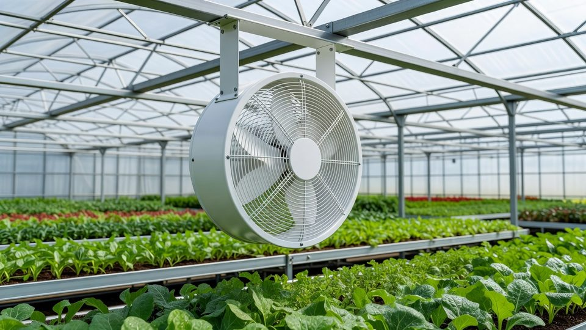
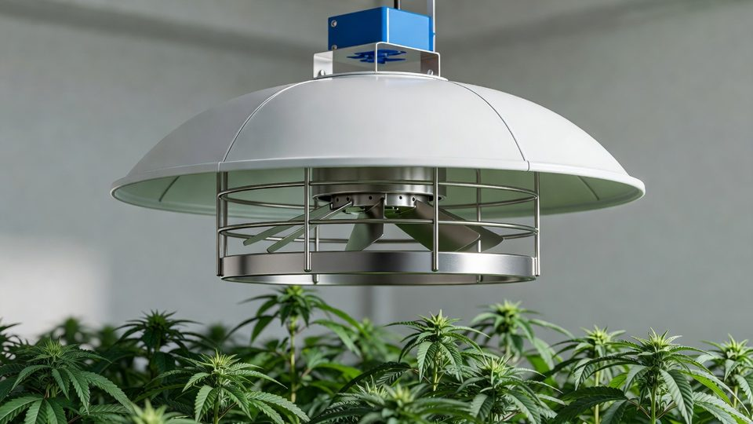
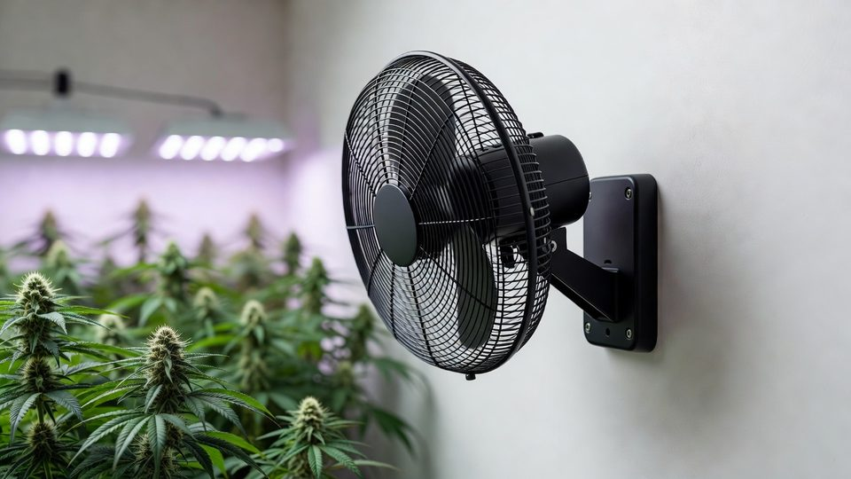
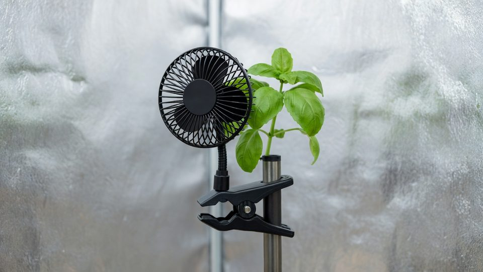
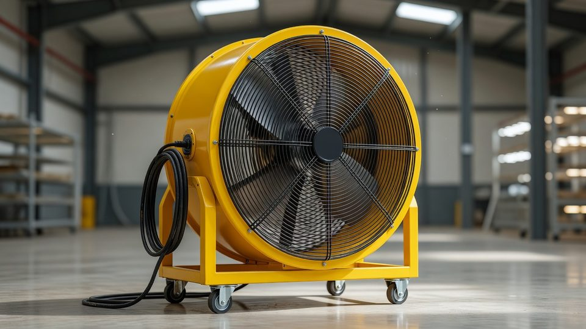
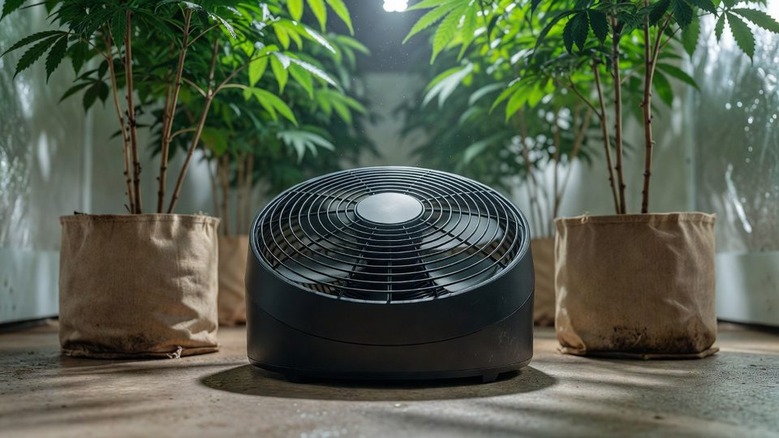
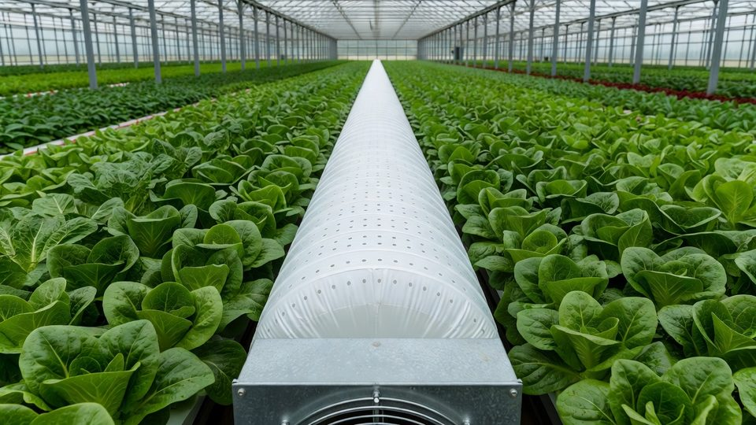
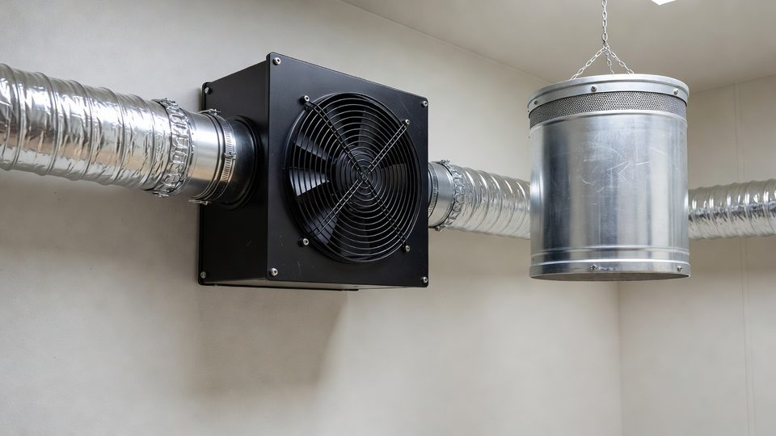

Airflow design for indoor cultivation
Each leaf has a layer of still air that decreases the rate of gas exchange. Airflow removes this layer. After you read this paper, you will know how much air to move and which fans supply the air. You will also know where to put the fans, to give each leaf a light airflow.
Purpose and scope
Airflow keeps the gases at the leaf in movement. This paper shows the effect of airflow, how much airflow is necessary, which fans supply it, and where to put the fans. Thus each part of the canopy has a light airflow. The parts include the inner leaves in the middle of the canopy, where bud rot starts.
This paper starts with the basic facts. It shows the effect of air movement at the leaf and how much airflow you want. It also shows which fans make this airflow, how to compare the fans, and where to hang them.
Definitions
Evidence and limitations
We want each paper to be correct. Thus we examine each paper for information that is not solid. This information comes from the view of one grower, from a small number of sources, or from grower methods that have no controlled test. We identify this information, and we do not show it as solid.
Frequently there is no paper for the decision that you must make. Then we use the reports of other growers and the methods that work in the rooms that we know. This information can help you, but it is not the result of a laboratory test. Use the methods that work for your plants, for your room and for your meters. If a table does not agree with your crop, use the data from your crop and record the difference.
- When the boundary layer becomes thinner, gas exchange increases. Air that does not move keeps the humidity at the leaf.
- Mechanical movement of the stem (thigmomorphogenesis) can change the strength of the stem.
- Ranges of air speed of approximately 0.3 to 1.0 m/s that make the canopy move, and the usual positions of HAF fans.
- A sudden change in disease or stress at one value of air velocity, with no specified height of measurement.
If you find an error, make a report. We will correct it. Make the report on GitHub, with the name of the paper and the information that is incorrect. If you have a source, include it: Make a report of an accuracy problem. The regulations, labels and licenses of your area always override each procedure in these papers. The label weak in a paper shows the points where the risk of an error is highest.
Leaf boundary layers
The air on the surface of a leaf almost does not move. Thus a thin layer of still air with high humidity stays on the leaf. The air in this layer almost does not mix with the air in the room. This layer is the boundary layer.
CO2 must go into the leaf, and water vapor and heat must go out of the leaf. They must go across the boundary layer by diffusion, which is slow. When the boundary layer is thicker, they move more slowly[1].
Moving air makes the boundary layer thinner. A small airflow has an important effect. Tests show that an added air velocity of less than approximately 0.2 m/s increases the photosynthesis in the day by 10 to 20%[2]. Thus fans are necessary in a grow room.
Airflow targets
More airflow helps, but the effect becomes much smaller each time that the airflow increases. When the airflow increases from still air to a light airflow, photosynthesis increases quickly. After this, the curve is flat. Most of the effect occurs when the leaves move a small distance[3].
Airflow and light intensity
When the light is brighter, the leaf must have more air. High light intensity causes a high rate of photosynthesis and a high rate of transpiration. These two rates are high only if the boundary layer is thin. The yield of cannabis continues to increase when the light increases, to very high values[5]. But this occurs only if the airflow and the climate control also increase. A bright room that has weak airflow cannot use all the light.
Light, CO2, temperature, humidity and airflow have an effect on each other (refer to the systems guide). If you increase the light and do not increase the airflow, the leaves become hot and stay in the boundary layer of moist air[9].
Airflow, transpiration and nutrient uptake
When the boundary layer is thinner, CO2 moves into the leaf more quickly and water moves out of the leaf more quickly. More airflow causes more transpiration. Thus the plant must have more water and more nutrient at the roots. Two effects are important:
- Calcium tipburn: Calcium moves into the leaf in the transpiration stream. Thus the uptake of calcium changes with the flow of water[7]. If the airflow is very high and the feed is too low, calcium deficiency causes tipburn. Tipburn occurs also when the tank contains a large quantity of calcium. To correct this, make the feed agree with the airflow. Do not make the airflow agree with the feed.
- Stronger plants (a good effect). Air movement is a mechanical signal. When a plant has a light airflow, it makes stems that are shorter, thicker and stronger. This effect is thigmomorphogenesis[8]. A plant that has good airflow can hold heavy colas without stakes.
Tipburn has two opposite causes. The first cause is airflow that is too high with feed that is too low. The result is a calcium deficiency in the leaf. The second cause is a dead zone in a dense canopy, where the air does not move. The leaves in the dead zone cannot transpire. As a result, no calcium moves to these leaves.
In lettuce, the result is this: when you blow air directly into the inner leaves, the calcium in the leaves increases. The tipburn almost stops[13]. The top-down fans in section 10 are important because of this result.
Airflow system functions and equipment
The instruction “Add a fan” includes three different tasks. In a first room, the most frequent airflow problem is a fan that is incorrect for the task that you have:
Move the air that is in the room. Thus each leaf has a light airflow and no dead zones occur. A dead zone is an area where the air does not move and the humidity is high. This task is for the boundary layer[6]. Most of this paper is about this task.
Replace the room air with external air. The room air has high humidity and a low CO2 concentration. You can also push the room air through a carbon filter. Inline duct fans and wall exhaust fans do this task. Air exchange removes water from the room, but it has almost no effect on the leaf.
An air conditioner, a dehumidifier or an air handling unit (AHU) changes the temperature and the moisture of the air. The unit must supply this conditioned air to the correct positions in the room. This supply of the air to all positions is a different problem.
Put the fans where they push air through the canopy, not only along its top. Defoliate the plants until air can go into the canopy. Air goes where the resistance is low. It does not go into corners, the bottom of the canopy or the inner part of a dense canopy. Bud rot starts in these dead zones, where the air does not move and the humidity is high.
Turbulent airflow and canopy mixing
Do not point one large fan straight along a row. A jet of laminar airflow makes a thick boundary layer on each surface that it touches. The air that is not on the axis of the jet does not move. Turbulent airflow comes from many fans that point in different directions, with oscillation. It changes the boundary layer on each leaf from all directions at all times. Turbulent airflow makes the boundary layer thinner more than other types of airflow[1][2].
Walk through the room. Examine each leaf, from the top to the bottom and in the plants. Each leaf must move a small distance. A leaf that does not move is in a dead zone. Supply air to this area. If a leaf shakes strongly, decrease the speed of that fan.
Data from tests in controlled rooms
The sections above are about the physiology of the leaf. This section shows if airflow changes the yield in a flower room. Pipp Horticulture, with Dr. Allison Justice and the Cannabis Research Coalition, did a controlled test in three flower rooms that were the same. The VPD, the temperature and the humidity were constant in all the rooms. Only the airflow was different[10].
The three rooms had different supplied air speeds. The test gives these values in feet for each minute (FPM), a frequent unit in commercial horticulture. The values that the test compared were approximately 0.5, 1.0 and 2.0 m/s (approximately 100, 200 and 400 FPM). The test gave one clear result:
It is possible to think that this result does not agree with the flat curve at the leaf in Figure 2. But the two agree. Figure 2 gives the air velocity at one leaf. The FPM here is the air speed that the room supplies in total.
The speed of the air decreases when the air goes into the canopy. Thus the room must supply an air speed of much more than 1 m/s at the fans. This air speed gives the bottom leaves and the inner leaves the light airflow in Figure 3. A supplied air speed of approximately 1.0 m/s (approximately 200 FPM) is approximately the value that gives each leaf an air velocity in the target range. It gives this velocity not only to the leaves on the external side of the canopy.
The rooms with an airflow more than this threshold showed three effects:
- More flower and less larf. The stems had less biomass, and the plant used more of its energy for the bud. The trim was approximately 42% in the plants with still air, and it was much lower with good airflow. Thus less of the harvest became larf[10].
- Less stress. The plants with still air had stems with more red color and more anthocyanin. Anthocyanin is a sign of stress that you can see. The plants with good airflow had a higher uniformity and less stress.
- More height, not weaker plants. At the end, plants with higher airflow had a height approximately 15 cm (6 in) more than the control plants with still air. Most of the vertical growth occurred before the end of week three, and the plants put less into the stem. This difference of height is an effect of less stress from still air. A stronger airflow that goes straight at the plants has a mechanical effect: it makes the plants shorter (refer to section 06).
The personnel who did the test controlled the room very accurately, but they found a difference of position. The first 30 to 60 cm (1 to 2 ft) of each row was different from the remaining part of the row. Their important result is this: “if airflow is not uniform, neither is your crop.” The dead zone problem from section 07 is the same problem, and the test measured it. It is more important to make sure that no leaf stays in still air than to get a high fan speed on average.
Think of this result as strong first data from a flower room. At this time, the result is not sure. The data are from one replicate. A second test is in progress, to make the statistics stronger[10]. The direction of the result agrees with the physiology of the leaf in the other sections of this paper.
Fan types
Fans are not the same. Each type makes a different shape of airflow, and the shape controls which leaves get air. Select a fan for the shape of airflow that you want. Do not select a fan for its cost or for its CFM value.








A HAF fan is a basket fan that hangs above head height and points to the side along the room. Typically, the blade is 300 to 500 mm (12 to 20 in) and the motor is small (1/10 to 1/15 hp)[11]. Some HAF fans together make one slow racetrack loop: the air goes along one side of the room and back along the other side. The jet of each fan pulls the still air around it along with it (entrainment). Thus a small fan moves a large volume of air.
Where: above the canopy, at a quarter of the room width from the wall. The problem: the air of the fan goes along the top of the crop. In a dense canopy, it does not go to the middle.
A VAF fan hangs above the canopy and blows air straight down through the canopy. Usually, it has a wide diffuser on top. Thus it gets air from a large area and supplies a wide flow of air, and not a jet with a small width. The VAF fan is the only type of fan that always supplies air to the leaves in the inner part of a plant.
Where: above the canopy in a grid. Put the fans at a distance that gives an overlap of their flows of air. The problem: each fan has a higher cost and makes shade. Put the fan in a position where its shade is not on the crop.
The oscillating fan is the usual fan for a grow room: a head on a bracket that oscillates. It has a low cost and it is easy to find. It is good in a small room, because the head oscillates and thus gives the turbulent airflow that section 08 recommends.
Where: on a wall or a pole, pointed to mix the air in the room. Do not point it straight at the plants. The problem: its air goes to one part of the room at a time. Each leaf gets air for only a part of each movement of the head. Thus a large number of fans is necessary to keep a constant airflow in a large room.
A clip fan is a very small oscillating fan on a clamp. The clamp attaches to the pole or the frame of a tent. The fan moves approximately the quantity of air for one plant.
Where: in tents and in setups for one plant only. The problem: a clip fan does not operate correctly in a larger canopy. When the canopy is more than approximately 2 m² (22 ft²), clip fans are not a good selection. You get six clip fans that do the task of one hung fan, with a higher total power and a worse uniformity.
A drum or pedestal floor fan has a large head with high power on a stand. The jet has a small width, the speed of the air is very high, and the fan makes much noise.
Where: for a short time only, to remove a dead zone in a corner or to dry a room quickly after water spills. The problem: it is the most frequent cause of wind damage. The plants on the axis of the fan get a very strong airflow, and the plants that are not on the axis get no airflow. Do not use these fans as the primary source of the airflow in a room.
An under-canopy fan is a flat, wide fan at the level of the pots. It blows air across the floor and up into the bottom of the plants. The zone below the canopy has the most water and the minimum air movement in the room. Cool air moves down, the pots and the floors release water vapor into this zone, and no fan above the canopy supplies air to it.
Where: at the level of the floor or the bench. Point the fan along the rows. The problem: there is almost none, and thus this fan gives a very good result for its cost. Keep the fan away from irrigation pipes. Make sure that the intake is clear of leaves on the floor.
An air sock is a long tube of fabric or plastic. A fan or an air handler supplies air to the tube. The air flows out through many small holes along the full length of the tube. Because the holes are small and many, the air supply along the tube is very equal, with no strong jet at one point. An investigation of this system gives approximate target values: holes of 6 to 10 mm with a spacing of 30 to 70 mm. The fan keeps a static pressure of approximately 30 to 40 Pa, and thus the tube stays inflated and circular[16].
Where: along the length of a row, above or below the bench. An air sock is the standard method to supply conditioned air from an air conditioner or a dehumidifier. It prevents a strong flow of air in one corner and a dead zone in the other corner. The problem: you must calculate the tube diameter, the hole size and the hole spacing, and the fan must make the necessary pressure.
An inline duct fan is a fan in a duct. It is a device for air exchange and not a device for circulation. It pulls air out of the room, usually through a carbon filter, and sends the air outdoors. It controls the humidity and gives new CO2 to a room with vents.
Where: on a duct to the top of the room (hot air with high humidity moves up). Put an intake at the bottom of the room (with or without a fan). The problem: some persons think that this fan makes the airflow for the canopy, but it does not. A room that has a large inline duct fan and no recirculation fans has a canopy with still air and high humidity.
Three more types of fan are for larger rooms. Use them for the correct task and not for canopy airflow:
An HVLS fan is a large ceiling fan with a very low speed. In a room with lights, a layer of warm air collects near the ceiling. The task of the fan is to break this layer and to push the air down again. It operates correctly in rooms with a large ceiling height. It has no effect in a room with a ceiling height of 2.4 m.
This fan does air exchange for large volumes of air in greenhouses and large rooms. The shutters open by gravity or with a motor. It is the same type as the inline duct fan, but it is much larger. A sealed room usually does not have this fan.
The AHU is the unit that does the heating, the cooling and the drying of the air. It controls the VPD. It must also have a method to supply this conditioned air equally across a canopy. Typically, this method is a duct that connects to air socks.
If the plants are on racks with many tiers, no other fan type operates correctly. Each tier is a closed space with a small height, and fans that hang above the racks cannot supply air to it. In-rack systems have a fan bar with ducts, and you install the fan bar in the rack. The fan bar pushes air along each tier or down through each tier[18]. On racks, an in-rack system is the only system that operates correctly. The Pipp test in section 09 was a test of this setup.
Selecting fans for canopy airflow
A ranking is correct only for one condition, and you must give this condition. This ranking is for the airflow that is important for the crop, for each dollar of installed cost. The room is a sealed indoor flower room with one tier, with a canopy of approximately 20 to 200 m² (215 to 2,150 ft²). When the room is different, the sequence of the fans is different. The points after the table show how.
| # | Fan type | Effect of the fan | Depth in the canopy | Selection |
|---|---|---|---|---|
| 1 | HAF fan | A loop of air around the room. It operates 24/7 with very low power. | Only along the top | Make these fans the primary fans of the room. The minimum cost for uniformity[11] |
| 2 | Under-canopy fan | Removes the zone with the most water and the minimum air movement in the room | Bottom of the plant | The best fan to add, for the cost. It is for the area where bud rot starts |
| 3 | VAF fan | Air that moves down into the middle of the plant | The full depth. The VAF fan is the only fan that supplies air at this depth. | Install these fans when the canopy density increases. Peer-reviewed papers show the effect on the calcium in the inner leaves[13][15] |
| 4 | Oscillating fan | Low cost. Turbulent airflow that changes direction. | Along the canopy and around it, for short times | It is good as the primary fan for a canopy of less than approximately 20 m² (215 ft²). For a larger canopy, other fans are better. |
| 5 | Air sock from the AHU | Equal supply of conditioned air, with no strong flow of air at one point | Along the row, with a light airflow | Very good, but it has a capital cost, and you must calculate the sizes of the system[16] |
| 6 | HVLS / destratification | Breaks the layer of hot air near the ceiling | It mixes only the large volume of air. | It operates correctly in rooms with a large ceiling height. It has no effect when the ceiling height is small. |
| 7 | Drum / pedestal fan | Air with a very high speed at one point | A very strong airflow on the axis and no airflow in the other areas | Use only to correct one area. The most frequent cause of wind damage. |
| 8 | Clip fan | The air for one plant | One plant | Use only in tents. Six clip fans give a worse result than one hung fan. |
| The ranking is for the airflow for each dollar in a sealed indoor flower room with one tier. The ranking does not include equipment for air exchange (inline duct fans and wall fans). This equipment is necessary, but it does a different task, and you cannot use it as a recirculation fan. | ||||
- Vertical racks: in-rack systems become #1, and HAF fans are not in the list. Fans that hang above the racks cannot supply air to the inner part of a tier[18].
- Dense canopy with no defoliation: VAF fans have a higher position than HAF fans in the ranking. Measurements show that top-down airflow is better than horizontal airflow to move air, and thus calcium, into the inner leaves[13][14]. In greenhouse lettuce, vertical fans decreased the tipburn rating from 5.0 to less than 0.1. They also decreased the percentage of burned leaves from 39% to less than 7%[15].
- Tents and setups for one plant: all the table changes to one or two clip fans and the inline duct fan. This selection is correct at this size.
- Greenhouses: HAF fans stay #1, and the air sock gets a higher position, because you also move heat in the greenhouse[12].
Select the airflow pattern and not the peak value. Almost all rooms with low performance have the same problem. The total CFM is large, but the airflow is not the same in all areas. Two drum fans in the corners give a high CFM value on paper. The middle of the room has still air and high humidity. Six small hung fans in a loop give a lower CFM value, but each leaf moves.
Fan position
The position of the fans is a problem of airflow pattern and not a problem of area. Do not try to put a jet of air on each plant. Make all the air in the room move slowly and constantly in a loop. Then push this moving air down into the canopy.
Then examine the room in a vertical section. In most rooms, the airflow is only at the top of the canopy. This condition causes rot to start at the bottom and in the middle:
- 1Make the loop firstSelect one direction. Do not change it. Hang the HAF fans to make the air go along one side and back along the other side. Each fan gives air to the next fan. Do not point two fans at each other. The loop stops, and a dead zone occurs where the two jets touch[11].
- 2Set the correct heightHang the fans above head height, approximately 2.1 to 2.4 m (7 to 8 ft) from the floor for a crop at floor level. Thus the jet goes above the canopy and does not push into the canopy[12]. If hung baskets or a rack for lights are at this height, hang the fans above them or below them. Do not hang the fans at the same height.
- 3Push air down into the canopyInstall top-down fans above the crop in a grid. Put the fans at a distance that gives an overlap of their flows of air. Almost all persons do not do this step, but it supplies air to the inner leaves[13].
- 4Supply air to the floorPut fans at the level of the pots. Point the fans along the rows. Cold air with high humidity collects at this level, and no fan above the canopy moves it.
- 5Mix the air, with no strong jetsPoint each fan in a direction with a small difference from the next fan. Let the oscillation change the direction. The room must have slow, turbulent airflow that mixes the air, and not a set of jets[1].
- 6Walk through the room and correctDo the leaf movement test at three heights. The heights are above the tops, in the middle of a plant and at the level of the pots. In the middle of a plant, put your hand into the plant. If the leaves do not move at one height, you do not have the fan for that height. A strip of tape on a stake, or a low-cost anemometer, gives a reading and not an estimate.
Operate the circulation fans for 24 hours each day, when the lights are on and when the lights are off. The extension service recommends that the fans operate continuously. The fans can be off when the exhaust fans operate or the vents are open, because the room has air exchange at these times[11]. When the lights are off, the leaf temperature decreases and becomes almost the same as the dew point, and condensation starts. At this time, you must not have still air[12].
Sizing the system
For many years, the greenhouse industry calculated the size of horizontal airflow. Its approximate values are also correct for an indoor room. Start with these values. Then measure the airflow. Adjust the fans:
| Item | Approximate value | Source |
|---|---|---|
| Total circulation capacity | Approximately 36.6 m³/h for each m² of floor (approximately 2 CFM/ft²). A greenhouse of 9 × 30 m (30 × 100 ft) must have a total of approximately 10,000 m³/h (approximately 6,000 CFM). | Bartok and Grubinger, UConn/UVM Extension[11] |
| First fan position | 3 to 4.5 m (10 to 15 ft) from the end wall, to get the air that turns at the corner. | UConn IPM[12] |
| Fan spacing | 12 to 15 m (40 to 50 ft) apart along the loop. In a small room, decrease the distance in the same ratio. | Bartok and Grubinger[11] |
| Horizontal position | Approximately ¼ of the room width from the side wall (or the middle of the bay). | UConn IPM[12] |
| Installation height | Above head height. Approximately 2.1 to 2.4 m (7 to 8 ft) for crops at floor level. Keep a distance from baskets and racks for lights. | Bartok and Grubinger[11] |
| Size of each fan | Blade of 300 to 500 mm (12 to 20 in), motor of 1/10 to 1/15 hp. A large number of small fans is better than a small number of large fans. | Bartok and Grubinger[11] |
| Greenhouse velocity target | 0.25 to 0.5 m/s (50 to 100 FPM) for the general movement of air in the room. | UConn IPM[12] |
| Cannabis flower-room target | Approximately 1.0 m/s (approximately 200 FPM) that the room supplies, to give each leaf an air velocity in the target range. | Pipp / Justice test[10] |
| Operation time | 24/7, but not while the exhaust fans operate or the vents are open. | Bartok and Grubinger[11] |
| Air sock specification | Holes of 6 to 10 mm with a spacing of 30 to 70 mm. A static pressure of approximately 30 to 40 Pa keeps the tube circular. | Investigation of a duct with holes (CFD)[16] |
The greenhouse value (0.25 to 0.5 m/s, or 50 to 100 FPM) and the value for cannabis (approximately 1.0 m/s, or approximately 200 FPM) are correct for different tasks. The greenhouse value is for temperature uniformity and to stop condensation on the leaves during the night. The crop has a more open canopy and less light[12]. The value for cannabis is from a flower canopy with a high density and high light. In this canopy, the task is to push air into the plant[10].
A higher canopy density increases the value, and a higher light intensity also increases the value. Use the greenhouse values for the position of the fans and the value for cannabis for the target.
The last number is the number that decreases the cost the most. The airflow of a fan increases in the same ratio as the speed, but the shaft power increases with the cube of the speed[17]. When the speed of a fan becomes half, the power becomes approximately one eighth. This fact has an effect on the selection of fans:
Two fans at full speed and eight fans at half speed can move almost the same quantity of air. But the eight fans use approximately a quarter of the power and give a much better airflow in all areas. The air comes from more directions, and there is a smaller number of dead zones.
Fans with an EC motor have a speed control. They have a higher cost than fans with an AC motor that has one speed, but the higher cost gives a better result. A fan with an AC motor is usually on or off. To decrease the airflow, you must set some fans to off. The result is areas without airflow at the positions of the fans that you stopped.
Troubleshooting
| Symptom | Possible cause | To correct it |
|---|---|---|
| Bud rot starts in the inner part of the colas | Dead zone: the air does not go to the inner part of the canopy | Add top-down (VAF) airflow. Defoliate the plants. Decrease the RH. |
| The tops of the plants move, but the middle and the bottom do not move | All the airflow is above the canopy (HAF fans only) | Add VAF fans above the crop. Add under-canopy fans at the level of the pots. |
| Rot and mildew start at the bottom of the plants | The zone at the floor has the most water and the minimum air movement in the room | Install under-canopy fans that blow along the rows. |
| Leaf tipburn, but the tank is full | The airflow is too high for the supply of nutrient (calcium) | Increase the feed EC to agree with the transpiration |
| Tipburn only on new growth in the inner part | The inner leaves are in still air and cannot transpire. As a result, no calcium moves to them. | Make air go into the inner part of the canopy and not only along the top |
| Leaves with the claw, or edges with wind damage | The air velocity is too high, or a fan points at the plants | Decrease the speed. Point the fans to mix the air and not to make strong jets. |
| One end of a row is always different | The loop does not operate: the fans are too far apart or they point at each other | Set the racetrack loop again. Do not point two fans at each other. |
| Large fans and much noise, but the air continues to be in layers | The number of fans is too small, and they operate at full speed | Use more fans at a lower speed. The power increases with the cube of the speed. |
| Plants with a large height and weak stems that bend | Air movement is too low, and thus there is no mechanical signal | Add a light, constant airflow across the canopy |
| The humidity of the room stays high | Recirculation is correct, but air exchange is not sufficient | Increase the intake and the exhaust. Increase the dehumidification. |
| A cold or dry area below the outlet of the air conditioner | The conditioned air goes to one point only | Send the air through a duct to an air sock along the row |
Expected results and limitations
- The task of airflow is to make the boundary layer thinner on each leaf.
- Make a light, turbulent airflow (approximately 0.3 to 1.0 m/s) in all areas, and also in the inner part of the plants.
- Select the airflow pattern and not the peak value. Many small fans in a loop are better than two large fans in the corners.
- Supply air at all three heights: above, through and below the canopy. Only the first height is easy.
- More airflow causes more use of water: the feed and the humidity control must increase also[7].
- Most of the effect occurs at low air velocity. A very high air velocity is not necessary[3].
Airflow is one part of the system of the room. Read this paper with the systems guide and the mold risk paper.
References
- Schuepp PH (1993). Tansley Review No. 59: Leaf boundary layers. New Phytologist 125(3):477-507. https://doi.org/10.1111/j.1469-8137.1993.tb03898.x
- Dupont K, van den Berg TE, Zhang J, Moene AF, Vialet-Chabrand SRM (2025). Beyond the boundary: a new road to improve photosynthesis via wind. J. Exp. Bot. 76(20):5791-5813. https://doi.org/10.1093/jxb/eraf325
- Kitaya Y, Shibuya T, Yoshida M, Kiyota M (2004). Effects of air velocity on photosynthesis of plant canopies under elevated CO2 levels. Adv. Space Res. 34(7):1466-1469. https://doi.org/10.1016/j.asr.2003.08.031
- Tjosvold SA (2018). Maximize photosynthesis with moving air. UC ANR Greenhouse & Floriculture (extension article). (source not from a journal, for example from a manufacturer) https://ucanr.edu/blogs/blogcore/postdetail.cfm?postnum=28455
- Rodriguez-Morrison V, Llewellyn D, Zheng Y (2021). Cannabis yield, potency, and leaf photosynthesis respond differently to increasing light levels in an indoor environment. Front. Plant Sci. 12:646020. https://pmc.ncbi.nlm.nih.gov/articles/PMC8144505/
- Kitaya Y, Tsuruyama J, Shibuya T, Yoshida M, Kiyota M (2010). CO2 and air circulation effects on photosynthesis and transpiration of tomato seedlings. Scientia Horticulturae 126(2):326-330. https://www.sciencedirect.com/science/article/abs/pii/S0304423810003316
- Gilliham M, et al. (2011). Calcium delivery and storage in plant leaves: exploring the link with water flow. J. Exp. Bot. 62(7):2233-2250. https://doi.org/10.1093/jxb/err111
- Chehab EW, Eich E, Braam J (2009). Thigmomorphogenesis: a complex plant response to mechano-stimulation. J. Exp. Bot. 60(1):43-56. https://doi.org/10.1093/jxb/ern315
- Chandra S, Lata H, Khan IA, ElSohly MA (2008). Photosynthetic response of Cannabis sativa L. to variations in photosynthetic photon flux densities, temperature and CO2 conditions. Physiol. Mol. Biol. Plants 14(4):299-306. https://pmc.ncbi.nlm.nih.gov/articles/PMC3550641/
- Anderson K (2026). What cannabis growers can finally learn about airflow. Pipp Horticulture — controlled flower-room trials with Dr. Allison Justice and the Cannabis Research Coalition. (Preliminary: one replicate reported, second underway.) (source not from a journal, for example from a manufacturer) https://pipphorticulture.com/what-cannabis-growers-can-finally-learn-about-airflow/
- Bartok JW, Grubinger V. Horizontal air flow is best for greenhouse air circulation. UMass Extension Greenhouse & Floriculture / eXtension Farm Energy (extension fact sheet). (source not from a journal, for example from a manufacturer) https://farm-energy.extension.org/horizontal-air-flow-is-best-for-greenhouse-air-circulation/
- University of Connecticut Integrated Pest Management. Horizontal air flow systems. UConn CAHNR (extension fact sheet). (source not from a journal, for example from a manufacturer) https://ipm.cahnr.uconn.edu/horizontal-air-flow-systems/
- Goto E, Takakura T (1992). Prevention of lettuce tipburn by supplying air to inner leaves. Transactions of the ASAE 35(2):641-645. https://doi.org/10.13031/2013.28644
- Ahmed HA, Tong YX, Yang QC (2020). Lettuce plant growth and tipburn occurrence as affected by airflow using a multi-fan system in a plant factory with artificial light. J. Thermal Biology 88:102496. https://doi.org/10.1016/j.jtherbio.2019.102496
- Moosavi-Nezhad M, Meng Q (2025). A calcium-mobilizing biostimulant provides tipburn control comparable to vertical airflow fans in greenhouse hydroponic lettuce 'Rex'. Front. Plant Sci. 16:1701667. https://doi.org/10.3389/fpls.2025.1701667
- Wang C, Fu J, Zhang Q, Sheng B, He F, Zhang G, Ding X, Cao N (2025). Optimizing perforated duct systems for energy-efficient ventilation in semi-closed greenhouses through process regulation. Processes (MDPI) 13(7):2253. https://doi.org/10.3390/pr13072253
- Air Movement and Control Association International (AMCA). Fan laws (affinity laws): airflow varies with fan speed, pressure with the square of speed, shaft power with the cube of speed. Standard fan-engineering relationship. (source not from a journal, for example from a manufacturer) https://www.amca.org/
- Vertical Air Solutions / Pipp Horticulture. In-rack airflow systems for vertical cannabis racking (manufacturer documentation). (source not from a journal, for example from a manufacturer) https://pipphorticulture.com/in-rack-airflow-systems/
Each citation in the paper, for example [1], refers to an item in this list. Each item is a primary source or an instruction from an authority, unless the item shows a different type. The results of cannabis tissue culture change much with the genotype. Before you use the dilutions, hormone doses and local regulations, make sure that they agree with the primary sources.